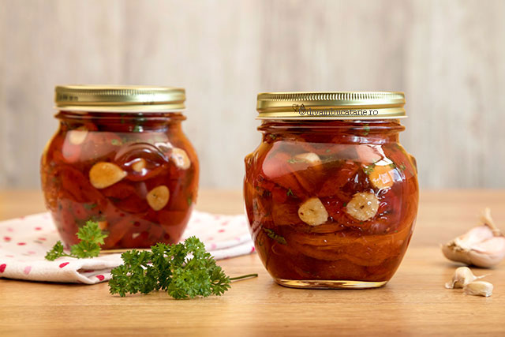

ARDEI COPTI IN OTET CU USTUROI LA BORCAN

CUM NE PREGATIM TRADITIONAL PENTRU IARNA
Ardei copti in otet cu usturoi,
la borcan, pentru iarna – o reteta simpla,
usor de pregatit.
Reteta de ardei
copti la borcan pentru iarna este o
salata delicioasa
de ardei copti cu otet,
ulei si usturoi, ce poate fi pastrata prin
sterilizare.
INGREDIENTE:
- (2 borcane de 450 ml)
- 2 kg ardei kapia
- 30 g sare pentru muraturi
- 100 ml otet de 9°
- 100 ml ulei
- 2-4 catei usturoi
- 1 legatura patrunjel
asdasdasd
MOD DE PREPARARE:
- coacem ardeii
- intr-un vas presaram sare peste ei dupa ce i-am copt
- se curata de coaja
- se toaca si se adauga patrunjelul
- se feliaza usutroiul
- se adauga sare,otet si ulei
CHEC CU MASCARPONE SI VISINE SAU CIRESE

PRAJITURA PUFOASA SI DELICIOASA
Checul cu mascarpone si visine este pufos, dulce-acrisor,
extrem de placut la gust.
Il puteti savura in orice moment
al zilei, fie pe post de desert, fie la micul dejun
sau
langa ceasca de cafea.
INGREDIENTE:
- 4 oua
- 200 grame zahar
- 30 g sare pentru muraturi
- 2 plicuri zahar vanilat
- 250 gr mascarpone
- 250 gr faina
- 1 lingurita extract natural de vanilie
- 150 g visine – fara samburi
- 1 lingura varfuita faina pentru tapetare fructe
MOD DE PREPARARE
- Pentru inceput am mixat ouale cu un varf cutit de sare
- Am adaugat extractul natural de vanilie
- am incorporat faina (cernuta in prealabil) si praful de copta
- Am pus un strat de aluat
- Am copt checul in cuptorul preincalzit la 180°C timp de 45 minute,
- L-am tapetat ci zahar pudra doar dupa ce s-a racit complet
Parca ziua incepe mai bine asa!
CEAFA DE PORC LA CUPTOR

RETETA CLASICA DE FRIPTURA SIMPLA SI FRAGEDA
Friptura de porc la tava se face usor, fara tehnici speciale de gatire, cu efort foarte mic de pregatire,
avand in vedere faptul ca asezonam carnea, o punem in tava si apoi o punem sa se coaca.
Ce poate fi mai simplu de atat?
INGREDIENTE:
- ceafa de porc
- ulei de masline/ vegetal
- catei de usturoi taiati pe jumatate
- sare
- piper proaspat macinat
- cateva boabe de piper
- crengute de cimbrisor / cimbru
- piper
- boia dulce
- 200 ml vin alb
MOD DE PREPARARE
- Punem intr-un vas termorezistent uleiul
- Adaugam carnea condimentata cu sare, piper si boia de ardei dulce
- Adaugam usturoiul, boabele de piper si verdeturile, apoi turnam vinul.
- Acoperim cu o folie de staniol si punem vasul in cuptorul preancalzit la 200°C pentru 30 minute
- Dupa acest interval scoatem folia si lasam sa se rumeneasca pe ambele parti
- Cand a scazut lichidul si friptura s-a rumenit uniform, putem spune ca este gata
Pofta buna!
Nu mi place titlu